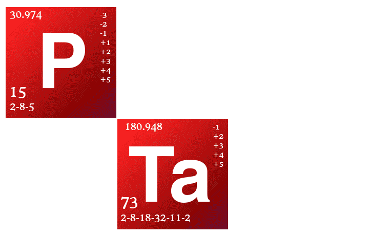

Helium

In 1868 Janssen discovered how to observe solar prominences without an eclipse. While observing the solar eclipse of August 18, 1868, at Guntur, Madras State (now in Andhra Pradesh), British India, he noticed bright lines in the spectrum of the chromosphere, showing that the chromosphere is gaseous. Present in the spectrum of the Sun, though not immediately noticed or commented upon, was a bright yellow line later measured to have a wavelength of 587.49 nm. This was the first observation of this particular spectral line, and one possible source for it was an element not yet discovered on the earth. From the brightness of the spectral lines, Janssen realized that the chromospheric spectrum could be observed even without an eclipse, and he proceeded to do so.
On 20 October of the same year, Joseph Norman Lockyer in England set up a new, relatively powerful spectroscope. He also observed the emission spectrum of the chromosphere, including the same yellow line. Within a few years, he worked with a chemist and they concluded that it could be caused by an unknown element, after unsuccessfully testing to see if it were some new type of hydrogen. This was the first time a chemical element was discovered on an extraterrestrial body before being found on the earth. Lockyer and the English chemist Edward Frankland named the element with the Greek word for the Sun, ἥλιος (helios).

Pierre Jules César Janssen (22 February 1824 – 23 December 1907), also known as Jules Janssen, was a French astronomer who, along with the English scientist Joseph Norman Lockyer, is credited with discovering the gaseous nature of the solar chromosphere, and with some justification the element helium.
Janssen was born in Paris and studied mathematics and physics at the faculty of sciences. He taught at the Lycée Charlemagne in 1853, and in the school of architecture 1865 – 1871, but his energies were mainly devoted to various scientific missions entrusted to him. Thus in 1857 he went to Peru in order to determine the magnetic equator; in 1861 – 1862 and 1864, he studied telluric absorption in the solar spectrum in Italy and Switzerland; in 1867 he carried out optical and magnetic experiments at the Azores; he successfully observed both transits of Venus, that of 1874 in Japan, that of 1882 at Oran in Algeria; and he took part in a long series of solar eclipse-expeditions, e.g. to Trani (1867), Guntur (1868), Algiers (1870), Siam (1875), the Caroline Islands (1883), and to Alcosebre in Spain (1905). To see the eclipse of 1870 he escaped from besieged Paris in a balloon (that eclipse was obscured by cloud cover, however).
Sir Joseph Norman Lockyer, FRS (17 May 1836 – 16 August 1920), known simply as Norman Lockyer, was an English scientist and astronomer. Along with the French scientist Pierre Janssen he is credited with discovering the gas helium. Lockyer also is remembered for being the founder and first editor of the influential journal Nature.

Lockyer was born in Rugby, Warwickshire. After a conventional schooling supplemented by travel in Switzerland and France, he worked for some years as a civil servant in the British War office. He settled in Wimbledon, South London after marrying Winifred James. He was a keen amateur astronomer with a particular interest in the Sun. In 1885 he became the world's first professor of astronomical physics at the Royal College of Science, South Kensington, now part of Imperial College. At the college, the Solar Physics Observatory was built for him and here he directed research until 1913.
In the 1860s Lockyer became fascinated by electromagnetic spectroscopy as an analytical tool for determining the composition of heavenly bodies. He conducted his research from his new home in West Hampstead, with a 6¼ inch telescope which he had already used in Wimbledon.
In 1868 a prominent yellow line was observed in a spectrum taken near the edge of the Sun. With a wavelength of about 588 nm, slightly less than the so-called "D" lines of sodium. The line could not be explained as due to any material known at the time, and so it was suggested by Lockyer that the yellow line was caused by an unknown solar element. He named this element helium after the Greek word 'Helios' meaning 'sun'. An observation of the new yellow line also was made by Janssen at the 18 August 1868 solar eclipse, and so he and Lockyer usually are awarded joint credit for helium's discovery. Terrestrial helium was found about 10 years later by William Ramsay. In his work on the identification of helium, Lockyer collaborated with the noted chemist Edward Frankland.
To facilitate the transmission of ideas between scientific disciplines, Lockyer established the general science journal Nature in 1869. He remained its editor until shortly before his death. Lockyer led eight expeditions to observe solar eclipses for example in 1870 to Sicily, 1871 to India and 1898 to India.
After his retirement in 1913, Lockyer established an observatory near his home in Salcombe Regis near Sidmouth, Devon. Originally known as the Hill Observatory, the site was renamed the Norman Lockyer Observatory after his death. For a time the observatory was a part of the University of Exeter, but is now owned by the East Devon District Council, and run by the Norman Lockyer Observatory Society. The Norman Lockyer Chair in Astrophysics at the University of Exeter is currently held by Professor Tim Naylor, who is the member of the Astrophysics group there which studies star formation and extrasolar planets.
Lockyer died at his home in Salcombe Regis in 1920, and was buried there in the churchyard of St Peter and St Mary.